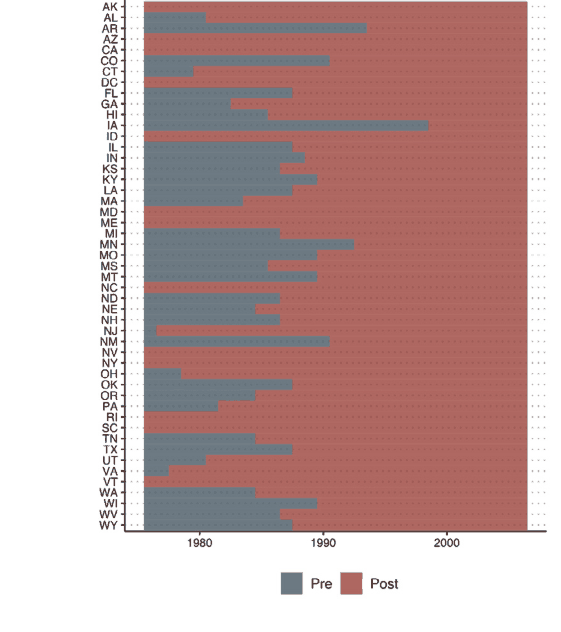
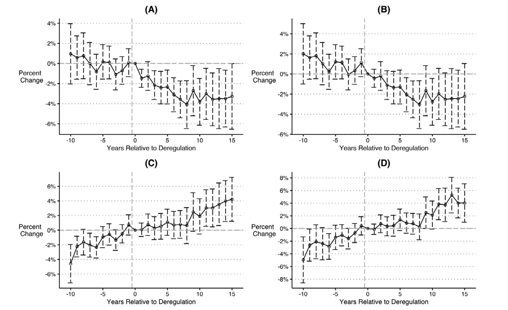
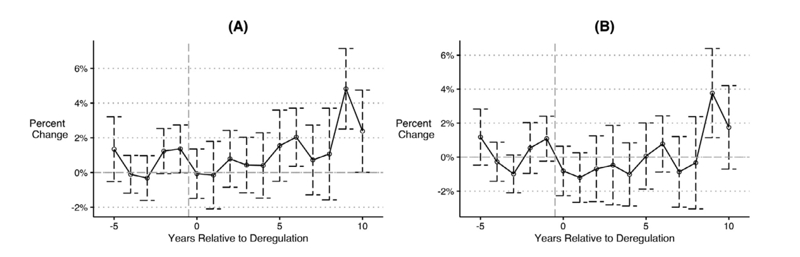
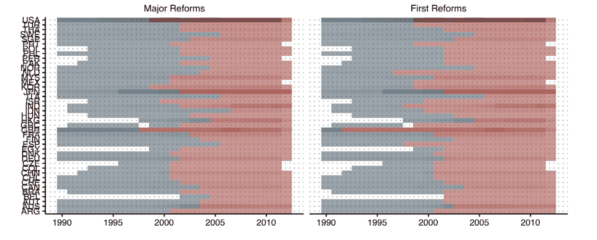
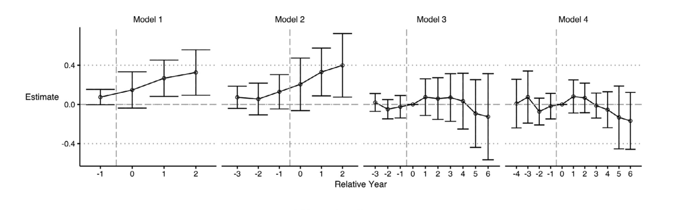
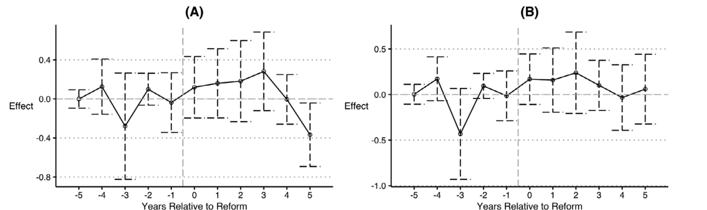
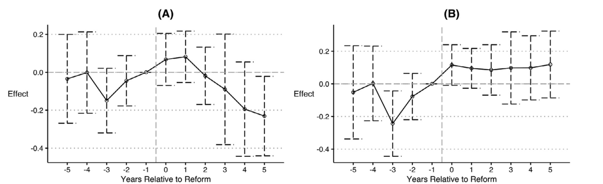

이 문제가 실제 연구의 결론을 바꾸는지 보기 위해 저자들은 두 논문을 다시 분석했다. 첫 번째인 BLL은 미국 주들이 서로 다른 해에 은행 지점 설립 규제를 완화한 것을 이용해, TWFE로 로그 Gini 계수 −0.022를 얻고 규제완화가 소득 불평등을 낮췄다고 보고했다.
읽는 법. 가운데 그림은 앞의 분해와 같은 방식으로 가로가 가중치, 세로가 2×2 DID의 가중평균이다. 아래 그림은 점이 추정치, 가로선이 95% 신뢰구간이다 (원문 Table 2, 주 단위 군집강건 표준오차).

BLL의 사건연구 그림에서는 사전추세가 없고 규제완화 직후부터 불평등이 감소했다. 저자들이 모형 설정을 하나씩 바꾸자 그림이 달라졌다.
읽는 법. 가로축은 규제완화 기준 상대시점(년), 세로축은 Gini의 변화율, 세로선은 95% 신뢰구간이다. 네 그림 모두 TWFE 사건연구다.


두 번째 재분석 대상인 FHLT는 나라마다 도입 연도가 다른 41건의 주요 이사회 개혁을 분석해 Tobin's Q의 유의한 상승을 보고했다. 기업 단위 불균형 패널이라 분해할 수 없어서 추정법별 결과를 비교한다.
읽는 법. 위 그림은 행이 국가이고 푸른 칸이 개혁 전, 붉은 칸이 개혁 후다. 아래 그림은 점이 추정치, 가로선이 95% 신뢰구간이고 채운 점이 5% 수준에서 유의하다.

FHLT의 사건연구는 개혁 전후 5년의 관측치만 사용하고 더미 네 개를 포함했다. 상대연도 −2 이전은 모두 기준기간으로 두었고 2-6년은 한 구간으로 묶었다.
읽는 법. 위 그림은 개혁 시행 첫 해를 1로, 아래 그림은 개혁 연도를 0으로 표기했다. 세로선은 95% 신뢰구간이다.



저자들은 논문 마지막에 여섯 가지를 권고했다. 각 권고가 이 발표의 어느 그림과 연결되는지를 오른쪽 끝에 적었다.
이 논문은 시뮬레이션과 두 편의 재분석으로 TWFE가 실패할 수 있음을 보였다. 실제로 얼마나 자주 실패하는지는 이후 연구들이 출판된 논문을 대량으로 다시 추정해 확인했다.
읽는 법. 막대는 TWFE와 새 추정치의 부호가 반대인 비교의 비율이다. 진한 막대는 CS 계열, 연한 막대는 imputation 계열 추정량과 비교한 결과다. Hull과 Proserpio는 2026년 11월 현재 심사 전 원고다.
Baker, Larcker & Wang (2022), How much should we trust staggered difference-in-differences estimates? Journal of Financial Economics 144, 370-395.
2026년 11월 18일 / 발제 강태영 (minvv23@gmail.com, 마케팅 박사과정)